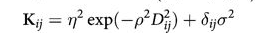
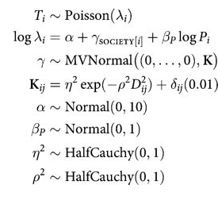
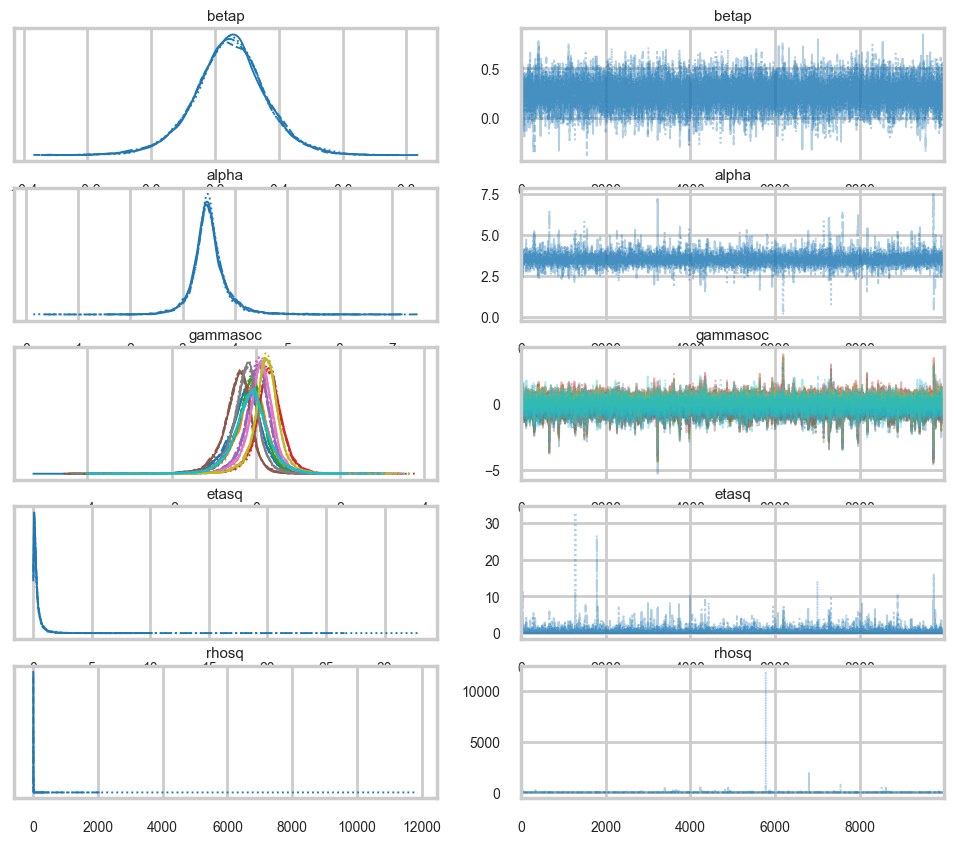
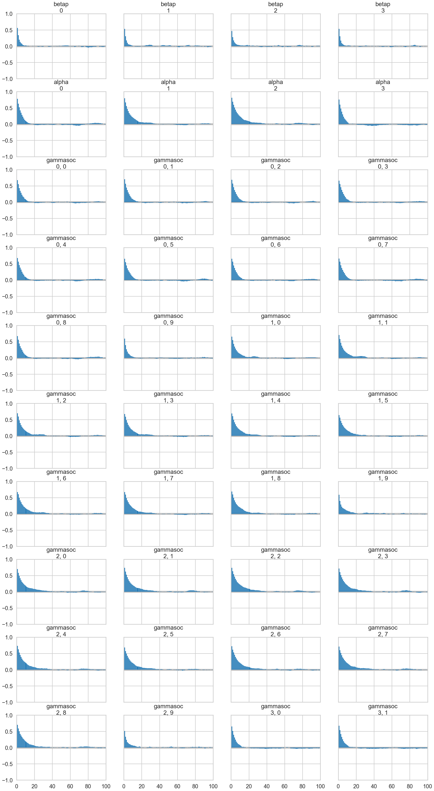
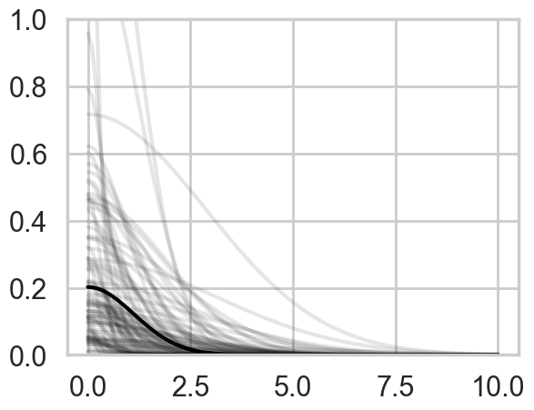
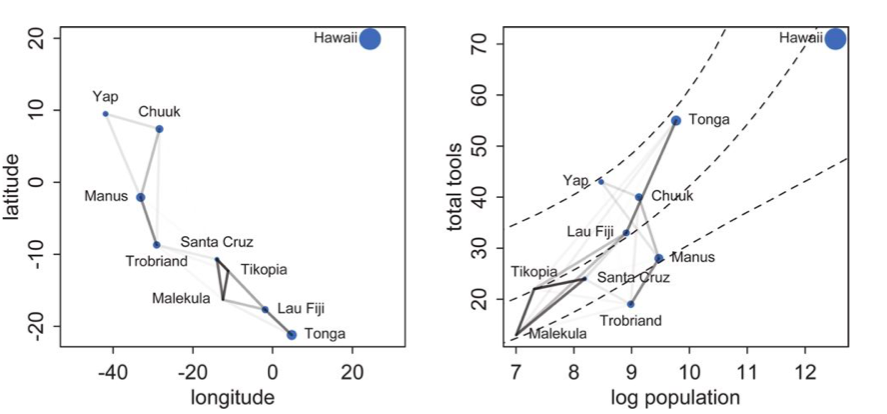
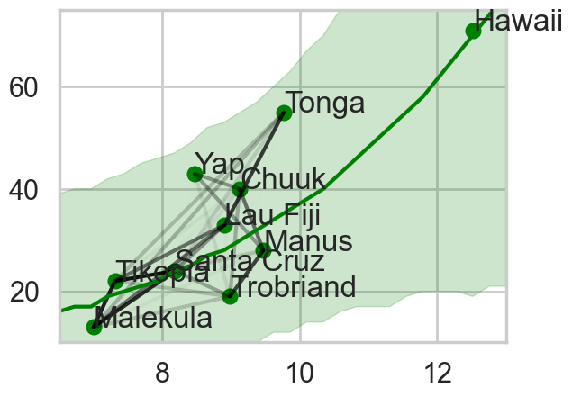

%matplotlib inline
import numpy as np
import scipy as sp
import matplotlib as mpl
import matplotlib.cm as cm
import matplotlib.pyplot as plt
import pandas as pd
pd.set_option('display.width', 500)
pd.set_option('display.max_columns', 100)
pd.set_option('display.notebook_repr_html', True)
import seaborn as sns
sns.set_style("whitegrid")
sns.set_context("poster")
import pymc as pm
import arviz as azGeographic Correlation and Oceanic Tools
Gaussian process covariance captures spatial correlation between island societies.
bayesian
regression
gaussian-processes
models
We extend the oceanic tools Poisson regression with a custom GP covariance matrix that models geographic correlation between societies. The inverse-square distance kernel reveals how nearby islands share tool-making knowledge.
We read back the Oceanic tools data with geographic coordinates and a distance matrix to model spatial correlation between island societies using a Gaussian Process covariance structure.
Reading in our data
We read back the Oceanic tools data
df = pd.read_csv("data/Kline2.csv", sep=';')
df.head()| culture | population | contact | total_tools | mean_TU | lat | lon | lon2 | logpop | |
|---|---|---|---|---|---|---|---|---|---|
| 0 | Malekula | 1100 | low | 13 | 3.2 | -16.3 | 167.5 | -12.5 | 7.003065 |
| 1 | Tikopia | 1500 | low | 22 | 4.7 | -12.3 | 168.8 | -11.2 | 7.313220 |
| 2 | Santa Cruz | 3600 | low | 24 | 4.0 | -10.7 | 166.0 | -14.0 | 8.188689 |
| 3 | Yap | 4791 | high | 43 | 5.0 | 9.5 | 138.1 | -41.9 | 8.474494 |
| 4 | Lau Fiji | 7400 | high | 33 | 5.0 | -17.7 | 178.1 | -1.9 | 8.909235 |
And center it
df['logpop_c'] = df.logpop - df.logpop.mean()df.head()| culture | population | contact | total_tools | mean_TU | lat | lon | lon2 | logpop | logpop_c | |
|---|---|---|---|---|---|---|---|---|---|---|
| 0 | Malekula | 1100 | low | 13 | 3.2 | -16.3 | 167.5 | -12.5 | 7.003065 | -1.973939 |
| 1 | Tikopia | 1500 | low | 22 | 4.7 | -12.3 | 168.8 | -11.2 | 7.313220 | -1.663784 |
| 2 | Santa Cruz | 3600 | low | 24 | 4.0 | -10.7 | 166.0 | -14.0 | 8.188689 | -0.788316 |
| 3 | Yap | 4791 | high | 43 | 5.0 | 9.5 | 138.1 | -41.9 | 8.474494 | -0.502510 |
| 4 | Lau Fiji | 7400 | high | 33 | 5.0 | -17.7 | 178.1 | -1.9 | 8.909235 | -0.067769 |
And read in the distance matrix
dfd = pd.read_csv("data/distmatrix.csv", header=None)
dij=dfd.values
dijarray([[0. , 0.475, 0.631, 4.363, 1.234, 2.036, 3.178, 2.794, 1.86 ,
5.678],
[0.475, 0. , 0.315, 4.173, 1.236, 2.007, 2.877, 2.67 , 1.965,
5.283],
[0.631, 0.315, 0. , 3.859, 1.55 , 1.708, 2.588, 2.356, 2.279,
5.401],
[4.363, 4.173, 3.859, 0. , 5.391, 2.462, 1.555, 1.616, 6.136,
7.178],
[1.234, 1.236, 1.55 , 5.391, 0. , 3.219, 4.027, 3.906, 0.763,
4.884],
[2.036, 2.007, 1.708, 2.462, 3.219, 0. , 1.801, 0.85 , 3.893,
6.653],
[3.178, 2.877, 2.588, 1.555, 4.027, 1.801, 0. , 1.213, 4.789,
5.787],
[2.794, 2.67 , 2.356, 1.616, 3.906, 0.85 , 1.213, 0. , 4.622,
6.722],
[1.86 , 1.965, 2.279, 6.136, 0.763, 3.893, 4.789, 4.622, 0. ,
5.037],
[5.678, 5.283, 5.401, 7.178, 4.884, 6.653, 5.787, 6.722, 5.037,
0. ]])Implementing the simple tools:logpop model and varying intercepts models
import pytensor.tensor as ptwith pm.Model() as m2c_onlyp:
betap = pm.Normal("betap", 0, 1)
alpha = pm.Normal("alpha", 0, 10)
loglam = alpha + betap*df.logpop_c
y = pm.Poisson("ntools", mu=pt.exp(loglam), observed=df.total_tools)
trace2c_onlyp = pm.sample(6000, tune=1000)Initializing NUTS using jitter+adapt_diag...
Multiprocess sampling (4 chains in 4 jobs)
NUTS: [betap, alpha]/Users/rahul/Library/Caches/uv/archive-v0/aTiHGxSE8gD8G3bEQyxJO/lib/python3.14/site-packages/rich/live.py:260:
UserWarning: install "ipywidgets" for Jupyter support
warnings.warn('install "ipywidgets" for Jupyter support')
Sampling 4 chains for 1_000 tune and 6_000 draw iterations (4_000 + 24_000 draws total) took 2 seconds.az.summary(trace2c_onlyp)| mean | sd | hdi_3% | hdi_97% | mcse_mean | mcse_sd | ess_bulk | ess_tail | r_hat | |
|---|---|---|---|---|---|---|---|---|---|
| betap | 0.239 | 0.031 | 0.179 | 0.297 | 0.0 | 0.0 | 20521.0 | 16397.0 | 1.0 |
| alpha | 3.478 | 0.058 | 3.372 | 3.588 | 0.0 | 0.0 | 20922.0 | 16520.0 | 1.0 |
Notice that \(\beta_P\) has a value around 0.24
We also implement the varying intercepts per society model from before
with pm.Model() as m3c:
betap = pm.Normal("betap", 0, 1)
alpha = pm.Normal("alpha", 0, 10)
sigmasoc = pm.HalfCauchy("sigmasoc", 1)
alphasoc = pm.Normal("alphasoc", 0, sigmasoc, shape=df.shape[0])
loglam = alpha + alphasoc + betap*df.logpop_c
y = pm.Poisson("ntools", mu=pt.exp(loglam), observed=df.total_tools)
with m3c:
trace3 = pm.sample(6000, tune=1000, target_accept=0.95)Initializing NUTS using jitter+adapt_diag...
Multiprocess sampling (4 chains in 4 jobs)
NUTS: [betap, alpha, sigmasoc, alphasoc]/Users/rahul/Library/Caches/uv/archive-v0/aTiHGxSE8gD8G3bEQyxJO/lib/python3.14/site-packages/rich/live.py:260:
UserWarning: install "ipywidgets" for Jupyter support
warnings.warn('install "ipywidgets" for Jupyter support')
Sampling 4 chains for 1_000 tune and 6_000 draw iterations (4_000 + 24_000 draws total) took 5 seconds.
There were 10 divergences after tuning. Increase `target_accept` or reparameterize.az.summary(trace3)| mean | sd | hdi_3% | hdi_97% | mcse_mean | mcse_sd | ess_bulk | ess_tail | r_hat | |
|---|---|---|---|---|---|---|---|---|---|
| betap | 0.261 | 0.081 | 0.107 | 0.416 | 0.001 | 0.001 | 9947.0 | 9891.0 | 1.0 |
| alpha | 3.443 | 0.120 | 3.211 | 3.667 | 0.001 | 0.001 | 7646.0 | 8098.0 | 1.0 |
| alphasoc[0] | -0.201 | 0.241 | -0.665 | 0.243 | 0.002 | 0.002 | 12562.0 | 11942.0 | 1.0 |
| alphasoc[1] | 0.042 | 0.221 | -0.367 | 0.478 | 0.002 | 0.002 | 11734.0 | 10870.0 | 1.0 |
| alphasoc[2] | -0.048 | 0.195 | -0.418 | 0.331 | 0.002 | 0.002 | 12818.0 | 12931.0 | 1.0 |
| alphasoc[3] | 0.325 | 0.189 | -0.025 | 0.678 | 0.002 | 0.002 | 7467.0 | 9482.0 | 1.0 |
| alphasoc[4] | 0.044 | 0.176 | -0.281 | 0.391 | 0.002 | 0.001 | 12480.0 | 11816.0 | 1.0 |
| alphasoc[5] | -0.317 | 0.208 | -0.713 | 0.049 | 0.002 | 0.002 | 11430.0 | 12974.0 | 1.0 |
| alphasoc[6] | 0.145 | 0.171 | -0.169 | 0.478 | 0.002 | 0.001 | 11496.0 | 11783.0 | 1.0 |
| alphasoc[7] | -0.171 | 0.182 | -0.533 | 0.151 | 0.002 | 0.001 | 12357.0 | 13019.0 | 1.0 |
| alphasoc[8] | 0.274 | 0.175 | -0.042 | 0.613 | 0.002 | 0.001 | 9749.0 | 10910.0 | 1.0 |
| alphasoc[9] | -0.093 | 0.288 | -0.651 | 0.458 | 0.003 | 0.003 | 10202.0 | 9662.0 | 1.0 |
| sigmasoc | 0.308 | 0.127 | 0.087 | 0.545 | 0.002 | 0.001 | 4838.0 | 3874.0 | 1.0 |
A model with a custom covariance matrix
The assumption here now is that the intercepts for these various societies are correlated…
We use a custom covariance matrix which inverse-square weights distance

You have seen this before! This is an example of a Gaussian Process Covariance Matrix.
Here is the complete model:

with pm.Model() as mgc:
betap = pm.Normal("betap", 0, 1)
alpha = pm.Normal("alpha", 0, 10)
etasq = pm.HalfCauchy("etasq", 1)
rhosq = pm.HalfCauchy("rhosq", 1)
means = pt.stack([0.0]*10)
sigma_matrix = pt.diag(pt.as_tensor_variable([0.01]*10))
cov = pt.exp(-rhosq*dij*dij)*etasq + sigma_matrix
gammasoc = pm.MvNormal("gammasoc", means, cov=cov, shape=df.shape[0])
loglam = alpha + gammasoc + betap*df.logpop_c
y = pm.Poisson("ntools", mu=pt.exp(loglam), observed=df.total_tools)with mgc:
mgctrace = pm.sample(10000, tune=2000, target_accept=0.95)Initializing NUTS using jitter+adapt_diag...
Multiprocess sampling (4 chains in 4 jobs)
NUTS: [betap, alpha, etasq, rhosq, gammasoc]/Users/rahul/Library/Caches/uv/archive-v0/aTiHGxSE8gD8G3bEQyxJO/lib/python3.14/site-packages/rich/live.py:260:
UserWarning: install "ipywidgets" for Jupyter support
warnings.warn('install "ipywidgets" for Jupyter support')
Sampling 4 chains for 2_000 tune and 10_000 draw iterations (8_000 + 40_000 draws total) took 42 seconds.az.summary(mgctrace)| mean | sd | hdi_3% | hdi_97% | mcse_mean | mcse_sd | ess_bulk | ess_tail | r_hat | |
|---|---|---|---|---|---|---|---|---|---|
| betap | 0.246 | 0.115 | 0.028 | 0.469 | 0.001 | 0.001 | 10228.0 | 11850.0 | 1.0 |
| alpha | 3.509 | 0.354 | 2.861 | 4.149 | 0.006 | 0.013 | 4779.0 | 3911.0 | 1.0 |
| gammasoc[0] | -0.268 | 0.455 | -1.121 | 0.549 | 0.007 | 0.012 | 5484.0 | 4869.0 | 1.0 |
| gammasoc[1] | -0.120 | 0.443 | -0.968 | 0.670 | 0.007 | 0.012 | 5099.0 | 4180.0 | 1.0 |
| gammasoc[2] | -0.164 | 0.428 | -0.982 | 0.587 | 0.007 | 0.012 | 5138.0 | 4151.0 | 1.0 |
| gammasoc[3] | 0.300 | 0.385 | -0.414 | 0.991 | 0.006 | 0.012 | 5388.0 | 4369.0 | 1.0 |
| gammasoc[4] | 0.032 | 0.379 | -0.660 | 0.720 | 0.006 | 0.013 | 5340.0 | 4222.0 | 1.0 |
| gammasoc[5] | -0.454 | 0.388 | -1.163 | 0.214 | 0.006 | 0.012 | 5582.0 | 4762.0 | 1.0 |
| gammasoc[6] | 0.102 | 0.374 | -0.585 | 0.773 | 0.006 | 0.013 | 5442.0 | 4361.0 | 1.0 |
| gammasoc[7] | -0.258 | 0.376 | -0.952 | 0.402 | 0.006 | 0.013 | 5448.0 | 4625.0 | 1.0 |
| gammasoc[8] | 0.239 | 0.357 | -0.391 | 0.908 | 0.005 | 0.013 | 5642.0 | 4511.0 | 1.0 |
| gammasoc[9] | -0.115 | 0.460 | -0.978 | 0.770 | 0.005 | 0.009 | 8816.0 | 8235.0 | 1.0 |
| etasq | 0.352 | 0.590 | 0.000 | 1.007 | 0.007 | 0.058 | 6572.0 | 9485.0 | 1.0 |
| rhosq | 2.028 | 61.589 | 0.002 | 3.745 | 0.361 | 28.788 | 7949.0 | 11599.0 | 1.0 |
az.plot_trace(mgctrace);
az.plot_autocorr(mgctrace);/Users/rahul/Library/Caches/uv/archive-v0/aTiHGxSE8gD8G3bEQyxJO/lib/python3.14/site-packages/arviz/plots/plot_utils.py:270: UserWarning: rcParams['plot.max_subplots'] (40) is smaller than the number of variables to plot (56) in plot_autocorr, generating only 40 plots
warnings.warn(
d={}
gammasoc_samples = mgctrace.posterior['gammasoc'].values.reshape(-1, 10)
for i, v in enumerate(df.culture.values):
d[v] = gammasoc_samples[:,i]
dfsamps=pd.DataFrame.from_dict(d)
dfsamps.head()| Malekula | Tikopia | Santa Cruz | Yap | Lau Fiji | Trobriand | Chuuk | Manus | Tonga | Hawaii | |
|---|---|---|---|---|---|---|---|---|---|---|
| 0 | -0.130590 | 0.089298 | -0.181058 | 0.615596 | 0.044638 | 0.310527 | 0.318529 | 0.011540 | 0.522527 | 0.314769 |
| 1 | -0.086934 | 0.260856 | -0.154601 | 0.322845 | 0.349256 | -0.795153 | 0.188721 | -0.294910 | 0.368426 | -0.112205 |
| 2 | -0.032733 | -0.008312 | 0.203633 | 0.255771 | 0.592531 | -0.736068 | 0.244687 | -0.314360 | 0.449234 | -0.123681 |
| 3 | -0.103811 | -0.273942 | 0.047349 | 0.704714 | 0.157025 | -0.358446 | 0.295830 | 0.189327 | 0.385959 | 0.165699 |
| 4 | -0.138728 | 0.030216 | -0.301498 | 0.259886 | 0.256591 | -0.179903 | 0.237708 | -0.223339 | 0.380631 | 0.238701 |
dfsamps.describe()| Malekula | Tikopia | Santa Cruz | Yap | Lau Fiji | Trobriand | Chuuk | Manus | Tonga | Hawaii | |
|---|---|---|---|---|---|---|---|---|---|---|
| count | 40000.000000 | 40000.000000 | 40000.000000 | 40000.000000 | 40000.000000 | 40000.000000 | 40000.000000 | 40000.000000 | 40000.000000 | 40000.000000 |
| mean | -0.267976 | -0.119667 | -0.164049 | 0.300261 | 0.031830 | -0.453667 | 0.102345 | -0.257916 | 0.238663 | -0.115166 |
| std | 0.455163 | 0.443377 | 0.427740 | 0.384622 | 0.378590 | 0.388457 | 0.373908 | 0.376287 | 0.356762 | 0.459638 |
| min | -5.289634 | -4.423674 | -4.465862 | -3.658895 | -3.881839 | -4.573565 | -3.968056 | -4.391581 | -3.535199 | -4.035076 |
| 25% | -0.494601 | -0.337898 | -0.363096 | 0.115944 | -0.143074 | -0.637728 | -0.066815 | -0.431598 | 0.076133 | -0.363911 |
| 50% | -0.236810 | -0.093558 | -0.132354 | 0.309491 | 0.046415 | -0.418354 | 0.116564 | -0.231101 | 0.248910 | -0.108310 |
| 75% | -0.008959 | 0.128550 | 0.076217 | 0.503830 | 0.229287 | -0.231597 | 0.297074 | -0.055373 | 0.422726 | 0.138756 |
| max | 3.642086 | 3.495336 | 3.480449 | 3.841792 | 3.590994 | 2.914655 | 3.495762 | 3.064075 | 3.666528 | 3.068279 |
Plotting posteriors and predictives
Lets plot the covariance posteriors for the 100 random samples in the trace.
smalleta=np.random.choice(mgctrace.posterior['etasq'].values.flatten(), replace=False, size=100)
smallrho=np.random.choice(mgctrace.posterior['rhosq'].values.flatten(), replace=False, size=100)with sns.plotting_context('poster'):
d=np.linspace(0,10,100)
for i in range(100):
covarod = lambda d: smalleta[i]*np.exp(-smallrho[i]*d*d)
plt.plot(d, covarod(d),alpha=0.1, color='k')
medetasq=np.median(mgctrace.posterior['etasq'].values.flatten())
medrhosq=np.median(mgctrace.posterior['rhosq'].values.flatten())
covarodmed = lambda d: medetasq*np.exp(-medrhosq*d*d)
plt.plot(d, covarodmed(d),alpha=1.0, color='k', lw=3)
plt.ylim([0,1]); 
The x-axis is thousands of kilometers. Notice how almost everything damps out by 4000 kms. Lets calculate the median correlation matrix:
medkij = np.diag([0.01]*10)+medetasq*(np.exp(-medrhosq*dij*dij))#from statsmodels
def cov2corr(cov, return_std=False):
'''convert covariance matrix to correlation matrix
Parameters
----------
cov : array_like, 2d
covariance matrix, see Notes
Returns
-------
corr : ndarray (subclass)
correlation matrix
return_std : bool
If this is true then the standard deviation is also returned.
By default only the correlation matrix is returned.
Notes
-----
This function does not convert subclasses of ndarrays. This requires
that division is defined elementwise. np.ma.array and np.matrix are allowed.
'''
cov = np.asanyarray(cov)
std_ = np.sqrt(np.diag(cov))
corr = cov / np.outer(std_, std_)
if return_std:
return corr, std_
else:
return corrmedcorrij=cov2corr(medkij)
medcorrijarray([[1.00000000e+00, 8.69835262e-01, 8.11247323e-01, 4.34367364e-04,
5.14947515e-01, 1.78423268e-01, 1.60816245e-02, 4.06297035e-02,
2.35399591e-01, 2.09068998e-06],
[8.69835262e-01, 1.00000000e+00, 9.15425265e-01, 8.36612901e-04,
5.13920440e-01, 1.87081494e-01, 3.35913172e-02, 5.34275935e-02,
2.00129903e-01, 1.20288892e-05],
[8.11247323e-01, 9.15425265e-01, 1.00000000e+00, 2.31844903e-03,
3.60868694e-01, 2.93087429e-01, 6.35978815e-02, 1.01103669e-01,
1.16791052e-01, 7.22676264e-06],
[4.34367364e-04, 8.36612901e-04, 2.31844903e-03, 1.00000000e+00,
7.54894121e-06, 8.22482782e-02, 3.58611523e-01, 3.31644646e-01,
2.34734649e-07, 8.62061048e-10],
[5.14947515e-01, 5.13920440e-01, 3.60868694e-01, 7.54894121e-06,
1.00000000e+00, 1.44642105e-02, 1.35724605e-03, 2.00050756e-03,
7.53105751e-01, 6.19798877e-05],
[1.78423268e-01, 1.87081494e-01, 2.93087429e-01, 8.22482782e-02,
1.44642105e-02, 1.00000000e+00, 2.56872798e-01, 7.11581900e-01,
2.08418262e-03, 1.62198197e-08],
[1.60816245e-02, 3.35913172e-02, 6.35978815e-02, 3.58611523e-01,
1.35724605e-03, 2.56872798e-01, 1.00000000e+00, 5.25753868e-01,
8.98552376e-05, 1.26166302e-06],
[4.06297035e-02, 5.34275935e-02, 1.01103669e-01, 3.31644646e-01,
2.00050756e-03, 7.11581900e-01, 5.25753868e-01, 1.00000000e+00,
1.69589545e-04, 1.11702234e-08],
[2.35399591e-01, 2.00129903e-01, 1.16791052e-01, 2.34734649e-07,
7.53105751e-01, 2.08418262e-03, 8.98552376e-05, 1.69589545e-04,
1.00000000e+00, 3.35602210e-05],
[2.09068998e-06, 1.20288892e-05, 7.22676264e-06, 8.62061048e-10,
6.19798877e-05, 1.62198197e-08, 1.26166302e-06, 1.11702234e-08,
3.35602210e-05, 1.00000000e+00]])We’ll data frame it to see clearly
dfcorr = pd.DataFrame(medcorrij*100)
dfcorr.index = df.culture.tolist()
dfcorr.columns = df.culture.tolist()
dfcorr| Malekula | Tikopia | Santa Cruz | Yap | Lau Fiji | Trobriand | Chuuk | Manus | Tonga | Hawaii | |
|---|---|---|---|---|---|---|---|---|---|---|
| Malekula | 100.000000 | 86.983526 | 81.124732 | 4.343674e-02 | 51.494751 | 17.842327 | 1.608162 | 4.062970 | 23.539959 | 2.090690e-04 |
| Tikopia | 86.983526 | 100.000000 | 91.542526 | 8.366129e-02 | 51.392044 | 18.708149 | 3.359132 | 5.342759 | 20.012990 | 1.202889e-03 |
| Santa Cruz | 81.124732 | 91.542526 | 100.000000 | 2.318449e-01 | 36.086869 | 29.308743 | 6.359788 | 10.110367 | 11.679105 | 7.226763e-04 |
| Yap | 0.043437 | 0.083661 | 0.231845 | 1.000000e+02 | 0.000755 | 8.224828 | 35.861152 | 33.164465 | 0.000023 | 8.620610e-08 |
| Lau Fiji | 51.494751 | 51.392044 | 36.086869 | 7.548941e-04 | 100.000000 | 1.446421 | 0.135725 | 0.200051 | 75.310575 | 6.197989e-03 |
| Trobriand | 17.842327 | 18.708149 | 29.308743 | 8.224828e+00 | 1.446421 | 100.000000 | 25.687280 | 71.158190 | 0.208418 | 1.621982e-06 |
| Chuuk | 1.608162 | 3.359132 | 6.359788 | 3.586115e+01 | 0.135725 | 25.687280 | 100.000000 | 52.575387 | 0.008986 | 1.261663e-04 |
| Manus | 4.062970 | 5.342759 | 10.110367 | 3.316446e+01 | 0.200051 | 71.158190 | 52.575387 | 100.000000 | 0.016959 | 1.117022e-06 |
| Tonga | 23.539959 | 20.012990 | 11.679105 | 2.347346e-05 | 75.310575 | 0.208418 | 0.008986 | 0.016959 | 100.000000 | 3.356022e-03 |
| Hawaii | 0.000209 | 0.001203 | 0.000723 | 8.620610e-08 | 0.006198 | 0.000002 | 0.000126 | 0.000001 | 0.003356 | 1.000000e+02 |
Notice how there is correlation in the upper left and with Manus and Trobriand. Mcelreath has a distance plot i reproduce below:

To produce a plot like the one on the right, we calculate the posterior predictives with the correlation free part of the model and then overlay the correlations
from scipy.stats import poisson
def compute_pp_no_corr(lpgrid, idata, contact=0):
alphatrace = idata.posterior['alpha'].values.flatten()
betaptrace = idata.posterior['betap'].values.flatten()
tl=len(alphatrace)
gl=lpgrid.shape[0]
lam = np.empty((gl, tl))
lpgrid = lpgrid - lpgrid.mean()
for i, v in enumerate(lpgrid):
temp = alphatrace + betaptrace*lpgrid[i]
lam[i,:] = poisson.rvs(np.exp(temp))
return lamlpgrid = np.linspace(6,13,30)
pp = compute_pp_no_corr(lpgrid, mgctrace)
ppmed = np.median(pp, axis=1)
pphpd = az.hdi(pp.T)/var/folders/wq/mr3zj9r14dzgjnq9rjx_vqbc0000gn/T/ipykernel_99733/1140317622.py:4: FutureWarning: hdi currently interprets 2d data as (draw, shape) but this will change in a future release to (chain, draw) for coherence with other functions
pphpd = az.hdi(pp.T)import itertools
corrs={}
for i, j in itertools.product(range(10), range(10)):
if i <j:
corrs[(i,j)]=medcorrij[i,j]
corrs{(0, 1): np.float64(0.8698352620543791),
(0, 2): np.float64(0.8112473227705732),
(0, 3): np.float64(0.00043436736396140004),
(0, 4): np.float64(0.5149475145540022),
(0, 5): np.float64(0.1784232683108405),
(0, 6): np.float64(0.016081624526447357),
(0, 7): np.float64(0.04062970353128279),
(0, 8): np.float64(0.23539959071681077),
(0, 9): np.float64(2.0906899790788574e-06),
(1, 2): np.float64(0.9154252648017558),
(1, 3): np.float64(0.0008366129005128546),
(1, 4): np.float64(0.5139204403538437),
(1, 5): np.float64(0.18708149396439477),
(1, 6): np.float64(0.03359131718569693),
(1, 7): np.float64(0.053427593503310396),
(1, 8): np.float64(0.20012990301592104),
(1, 9): np.float64(1.202888923895069e-05),
(2, 3): np.float64(0.0023184490292404336),
(2, 4): np.float64(0.3608686936824079),
(2, 5): np.float64(0.29308742903236046),
(2, 6): np.float64(0.06359788152183848),
(2, 7): np.float64(0.10110366922210785),
(2, 8): np.float64(0.11679105204171875),
(2, 9): np.float64(7.2267626429193134e-06),
(3, 4): np.float64(7.5489412116086325e-06),
(3, 5): np.float64(0.08224827819593294),
(3, 6): np.float64(0.35861152292486287),
(3, 7): np.float64(0.33164464636786223),
(3, 8): np.float64(2.347346485820119e-07),
(3, 9): np.float64(8.620610481644896e-10),
(4, 5): np.float64(0.014464210496029285),
(4, 6): np.float64(0.0013572460520712762),
(4, 7): np.float64(0.002000507564221195),
(4, 8): np.float64(0.7531057509569615),
(4, 9): np.float64(6.197988773284955e-05),
(5, 6): np.float64(0.25687279780700056),
(5, 7): np.float64(0.7115819000189696),
(5, 8): np.float64(0.0020841826197110433),
(5, 9): np.float64(1.621981972350849e-08),
(6, 7): np.float64(0.5257538678112668),
(6, 8): np.float64(8.985523762623615e-05),
(6, 9): np.float64(1.2616630242151445e-06),
(7, 8): np.float64(0.00016958954461546093),
(7, 9): np.float64(1.1170223361457242e-08),
(8, 9): np.float64(3.3560220950963584e-05)}with sns.plotting_context('poster'):
plt.plot(df.logpop, df.total_tools,'o', color="g")
lpv = df.logpop.values
ttv = df.total_tools.values
for a,x,y in zip(df.culture.values, lpv, ttv):
plt.annotate(a, xy=(x,y))
for i in range(10):
for j in range(10):
if i < j:
plt.plot([lpv[i],lpv[j]],[ttv[i], ttv[j]],'k', alpha=corrs[(i,j)]/1.)
plt.plot(lpgrid, ppmed, color="g")
plt.fill_between(lpgrid, pphpd[:,0], pphpd[:,1], color="g", alpha=0.2, lw=1)
plt.ylim([10, 75])
plt.xlim([6.5, 13])
Notice how distance probably pulls Fiji up from the median, and how Manus and Trobriand are below the median but highly correlated. A smaller effect can be seen with the triangle on the left. Of-course, causality is uncertain